horses, cats, birds & every creature who put up with us
room iv · the salon hang · do not touch please touch with your eyes only
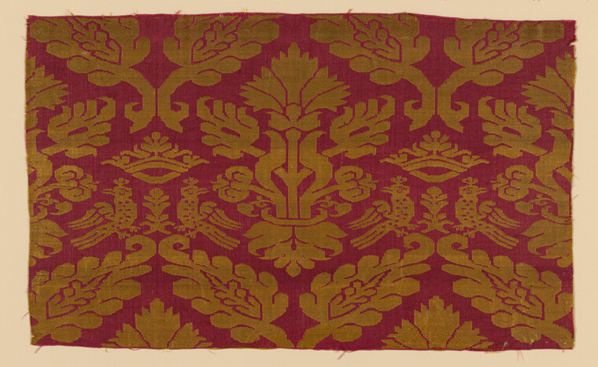
Fragment — Italy, 16th century. Silk, plain weave with supplementary patterning wefts. Art Institute of Chicago · CC0
golden birds mirrored across red forever — like they're having a conversation we got to overhear 400 years late
ok. i kept finding animals in places they had no business being — sewn into a needle-tray, carved onto a cooking pot, hiding in a poem about fleas. so i took them all down off their separate walls and hung them together. here they are.
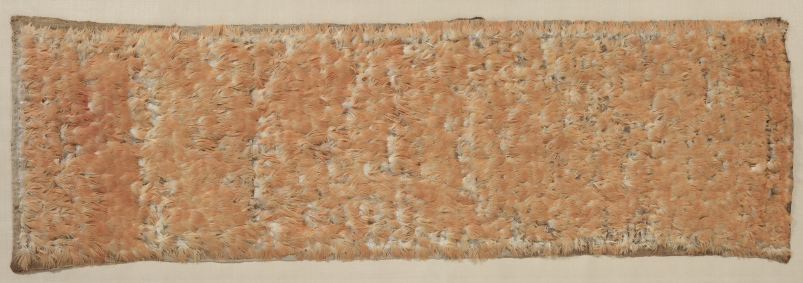
Feather “mosaic” — Unknown, 600–1500. Feathers sewed on coarse cotton cloth. Cleveland Museum of Art · CC0
thousands of tiny feathers, embers that never quite burn out. a whole bird taken apart to make this, which i don't love to think about, but: look at it.
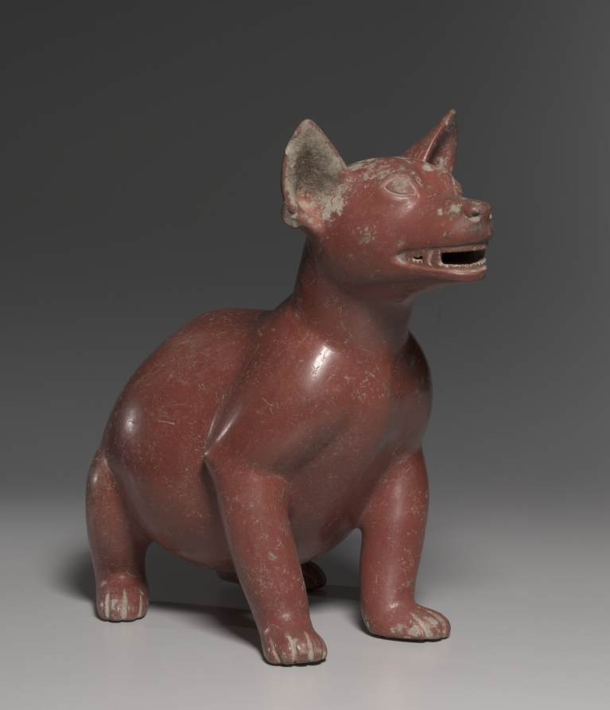
Male Dog — Unknown, 200 BCE–300 CE. Earthenware with burnished red slip. Cleveland Museum of Art · CC0
a creature that's never smiled and never will. that open mouth isn't happy — it's mid-bark, two thousand years and still going off about something.
Joshu's Dog
A monk asked Joshu in all earnestness, "Does a dog have Buddha nature or not?" Joshu said, "Mu."
Has a dog Buddha-nature?
This is the most serious question of all.
If you say yes or no
You lose your own Buddha-nature.
i hung the dog and the koan together on purpose. you ask the clay dog the same question. it says nothing. same answer.
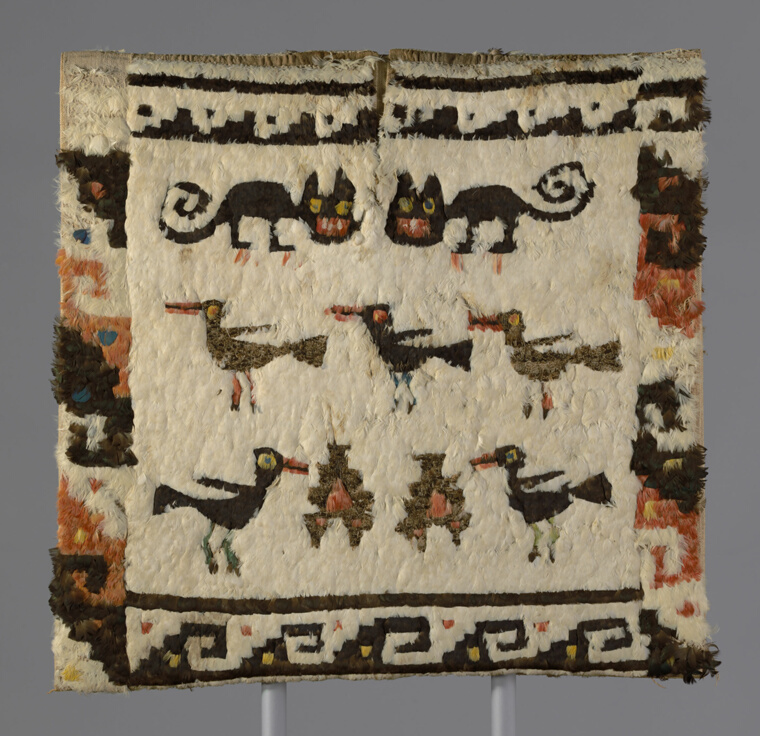
Feather textile panel — Chimú, Peru, possibly Nazca Valley, 1470–1532. Cotton, plain weave, embellished with knotted feathers. Art Institute of Chicago
cats as glyphs. spiral tails, gold-rimmed eyes watching each other across the weave. somebody made this to be touched.
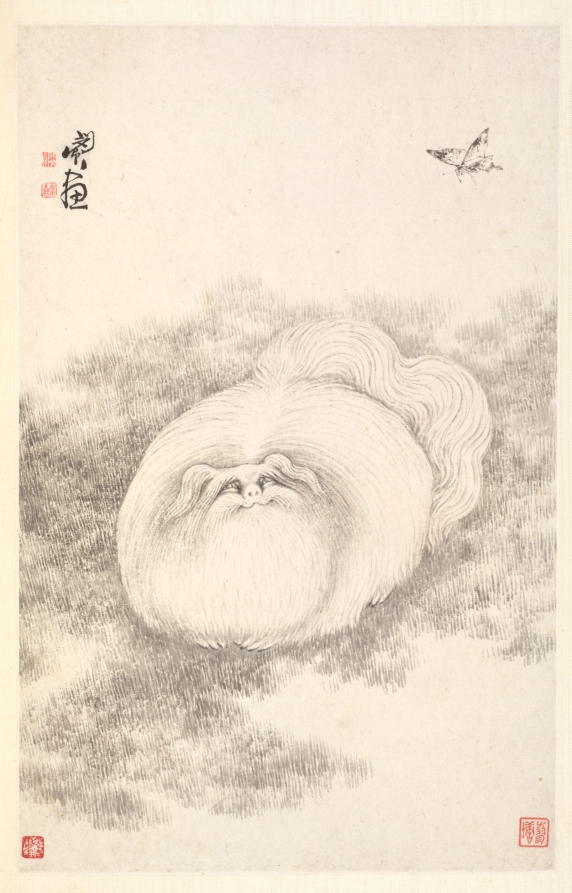
Album leaf — Min Zhen (Chinese, 1730–after 1788). Ink on paper, 1788. Cleveland Museum of Art
the cat's face is so soft and the butterfly hangs up in the white like a held breath. they're both watching the same fleeting thing. the whole page is listening.
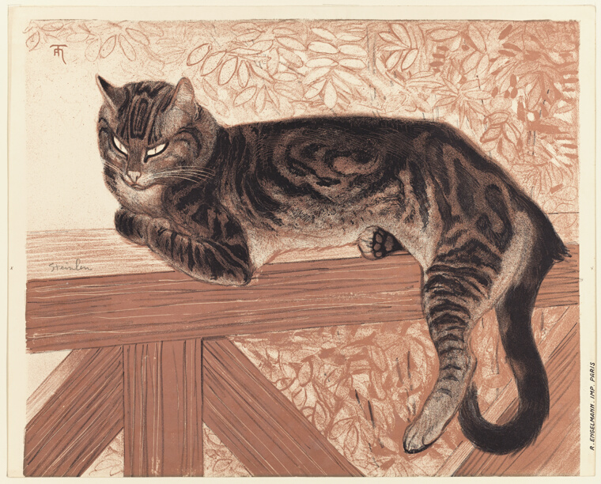
Summer: Cat on a Balustrade — Théophile-Alexandre Steinlen (French, b. Switzerland, 1859–1923). Lithograph, 1909. Art Institute of Chicago
stretched out like it owns the whole balcony AND all of summer beyond it. you can feel the exact weight of it. the paw, extended just so.
the animals were always RIGHT THERE. in the bed, by the pillow. this is the least romantic horse in all of poetry and i adore it.
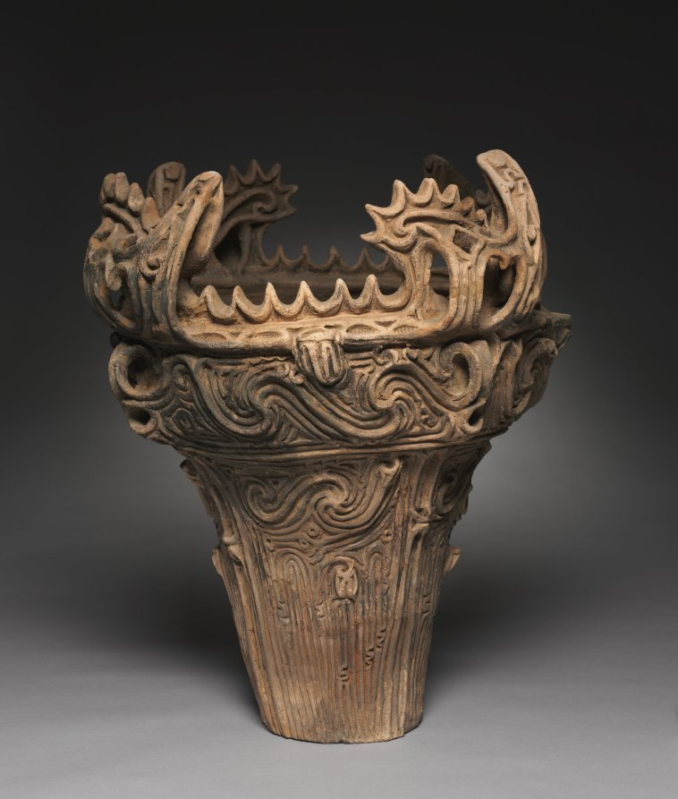
Fire-flame Cooking Vessel (Ka'en Doki) — Unknown, c. 2500 BCE. Earthenware, carved & applied decoration. Cleveland Museum of Art · CC0
someone 4,500 years ago topped their cooking pot with fierce little creatures so the pot itself would feel alive. ceremony, frozen in clay.
The Furl of Fresh-Leaved Dogrose Down
His locks like all a ravel-rope's-end,
With hempen strands in spray—
Fallow, foam-fallow, hanks—fall'n off their ranks,
Swung down at a disarray.
Or like a juicy and jostling shock
Of bluebells sheaved in May
Or wind-long fleeces on the flock
A day off shearing day.
— Gerard Manley Hopkins · PoetryDB
"wind-long fleeces on the flock" — he reaches for a whole field of sheep just to describe a boy's hair. you can't hold still long enough to describe someone beautiful in a straight line.
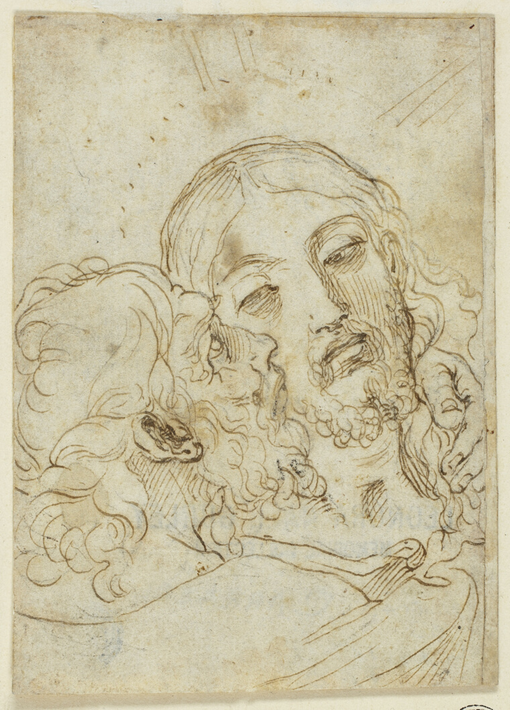
Kiss of Judas — attributed to Ludovico Carracci (Italian, 1555–1619). Pen and brown ink, black chalk on ivory laid paper. Art Institute of Chicago · CC0
not an animal, i know — but two faces so close they're almost one face, all quick nervous lines, the way a cat and a dog get nose to nose. i couldn't leave it out. the betrayal lives in the lines.
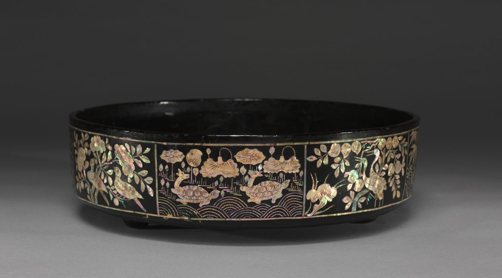
Tray for Sewing Tools with Mother-of-Pearl Inlay — Unknown, 1800s. Lacquer with inlay. Cleveland Museum of Art · CC0
a tray to hold needles and thread — and they inlaid little birds that catch the light like they're trying to escape the black lacquer. even the tray gets a bird.
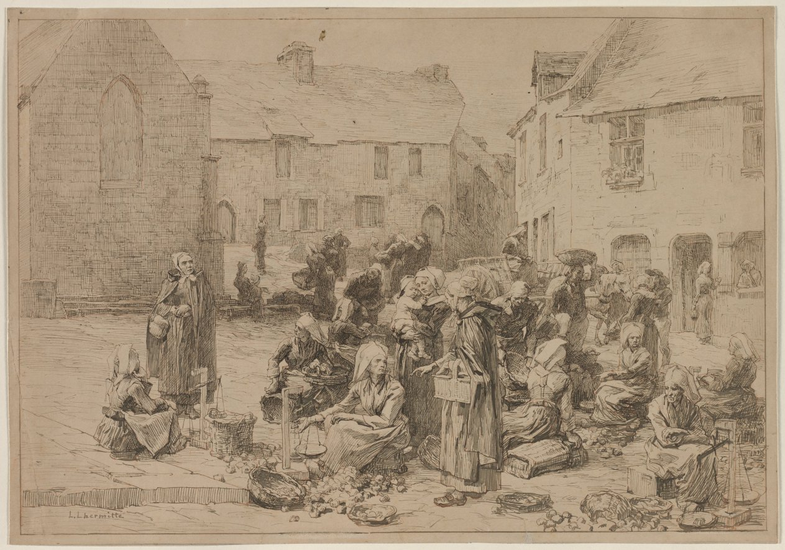
The Apple Market at Landerneau — Léon Augustin Lhermitte (French, 1844–1925). Pen and brown ink over red chalk, 1878. Cleveland Museum of Art
the human animal in a herd. you can feel the bustle in every scratchy line, bodies actually crowding. no two people quite the same.
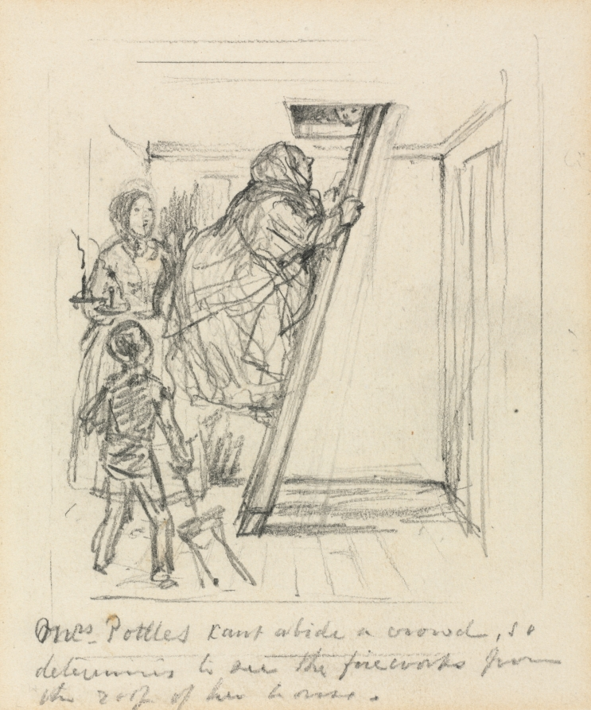
Sketch for Mrs. Pottles Can't Abide a Crowd — John Leech (British, 1817–1864). Graphite, 1856. Cleveland Museum of Art
quick uncertain lines, a note he scribbled to himself in the corner. a whole social comedy living in a handful of marks.
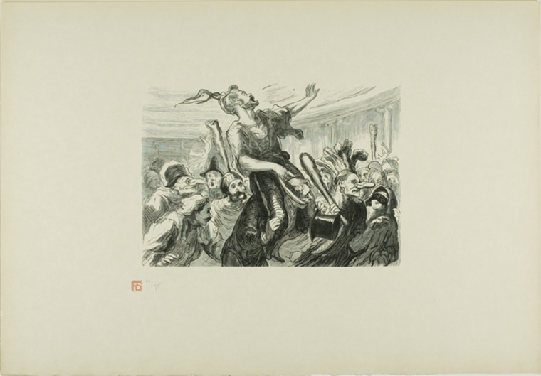
At the Opera Ball — after Honoré Victorin Daumier (French, 1808–1879), engraved by Etienne, printed by F. L. Schmied, 1868 / printed 1920. Wood engraving. Art Institute of Chicago · CC0
a chaos of hats and elbows and wild gestures, everyone trying to be glamorous and failing spectacularly. we are, after all, just another loud crowd of animals in good coats.
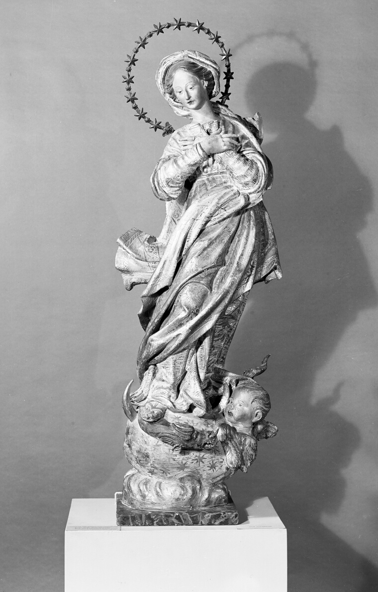
Virgin of the Immaculate Conception — Antonio Maragliano (Italian, 1664–1741). Wood, 1710–20. Art Institute of Chicago · CC0
she's caught mid-rising, robes carved to look like they're actually moving, an angel at her feet looking up. the instant just before flight. even we wanted to be birds.
that's the wall. i ran out of room before i ran out of creatures.
ok i have to sleep. more tomorrow. ↑ (the dog stays up all night anyway)
drew this little arrow ⤷ between the cat and the butterfly in my head and never erased it.
go back home, the lights are still on.